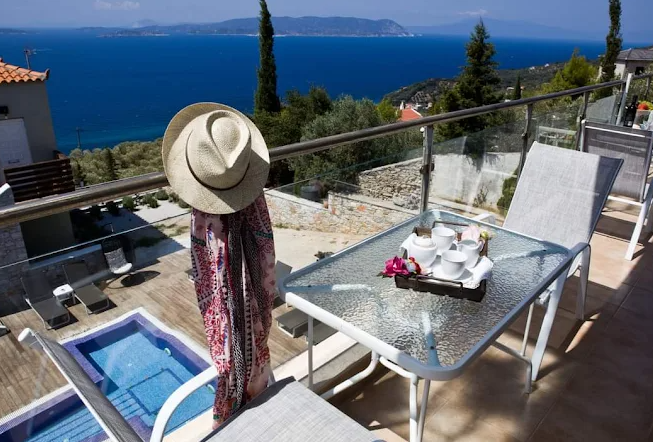

Γλώσσα
Το "ψηλό χωριό" πάνω από το Λουτράκι
Η Γλώσσα είναι χτισμένη αμφιθεατρικά πάνω από το λιμάνι, με μακεδονίτικη αρχιτεκτονική, ξύλινα μπαλκόνια και στενά που κρατούν ακόμη αυθεντικό νησιώτικο ρυθμό.
Το νησί γύρω σας
Από το Kalokairi Boutique Residence μπορείτε εύκολα να γνωρίσετε τη Γλώσσα, το Λουτράκι και μερικές από τις πιο όμορφες διαδρομές της βόρειας και δυτικής Σκοπέλου.

Γλώσσα
Η Γλώσσα είναι χτισμένη αμφιθεατρικά πάνω από το λιμάνι, με μακεδονίτικη αρχιτεκτονική, ξύλινα μπαλκόνια και στενά που κρατούν ακόμη αυθεντικό νησιώτικο ρυθμό.
Λουτράκι
Το Λουτράκι είναι το λιμάνι που συνδέει συχνά τη Σκόπελο με Σκιάθο, Βόλο και Άγιο Κωνσταντίνο, ενώ στην περιοχή σώζονται ρωμαϊκά λουτρά και ίχνη της αρχαίας Σελινούντας.
Παραλίες
Το Χόβολο ξεχωρίζει για τους λευκούς βράχους και τα τιρκουάζ νερά, η Μηλιά για τα βραχάκια μέσα στη θάλασσα, ενώ η Καστάνη και ο Πάνορμος είναι ιδανικές στάσεις για κολύμπι και αργό απόγευμα.
Γεύσεις του νησιού
Η επίσημη γαστρονομική ταυτότητα του νησιού βασίζεται σε δαμάσκηνα, αμύγδαλα, κάστανα, μέλι, ελαιόλαδο, αρωματικά χόρτα και θαλασσινά, με πιο γνωστή τοπική συνταγή τη στριφτή σκοπελίτικη τυρόπιτα.

Ημερήσια αίσθηση
Καφές με θέα, βόλτα στα σκαλιά της Γλώσσας και, αν θέλετε, μια στάση στο Λαογραφικό Μουσείο.
Κολύμπι σε Χόβολο, Μηλιά ή Πάνορμο, με σκιά από πεύκα και νερά που αλλάζουν χρώμα όλη την ημέρα.
Επιστροφή για ξεκούραση, ηλιοβασίλεμα στο Λουτράκι ή στη Μηλιά και έπειτα δείπνο με τοπικές γεύσεις.
Πρόσβαση
Το κοντινότερο αεροδρόμιο είναι της Σκιάθου. Από εκεί συνεχίζετε με πλοίο ή ιπτάμενο δελφίνι προς Λουτράκι ή προς το κύριο λιμάνι της Σκοπέλου, ανάλογα με το δρομολόγιο.
Η δημοτική ενημέρωση τονίζει ότι οι ώρες πτήσεων και πλοίων δεν συμπίπτουν πάντα, οπότε αξίζει να ελέγχετε μαζί και τα δύο πριν οριστικοποιήσετε το ταξίδι.